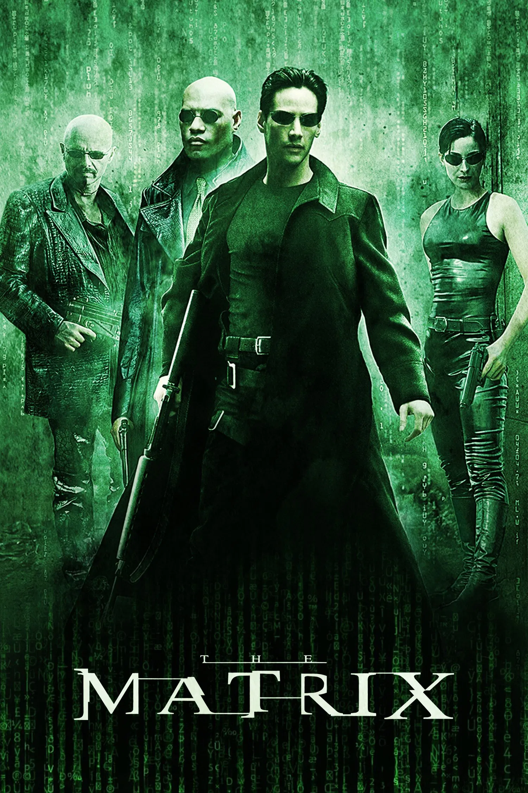
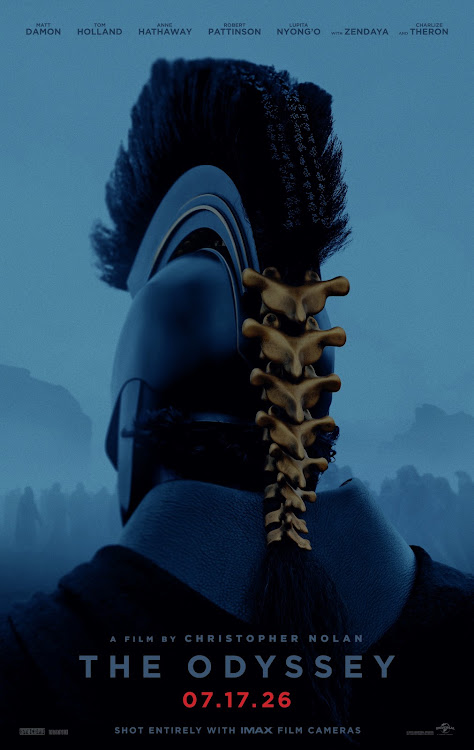
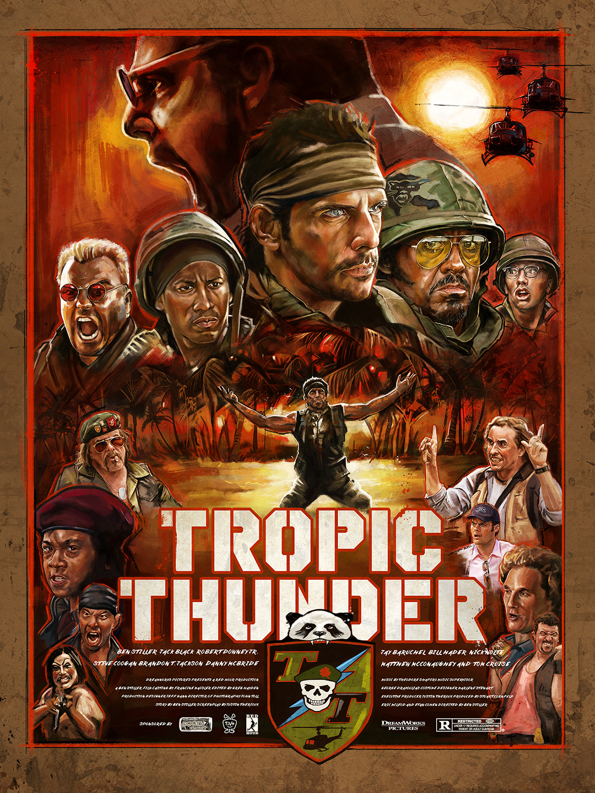
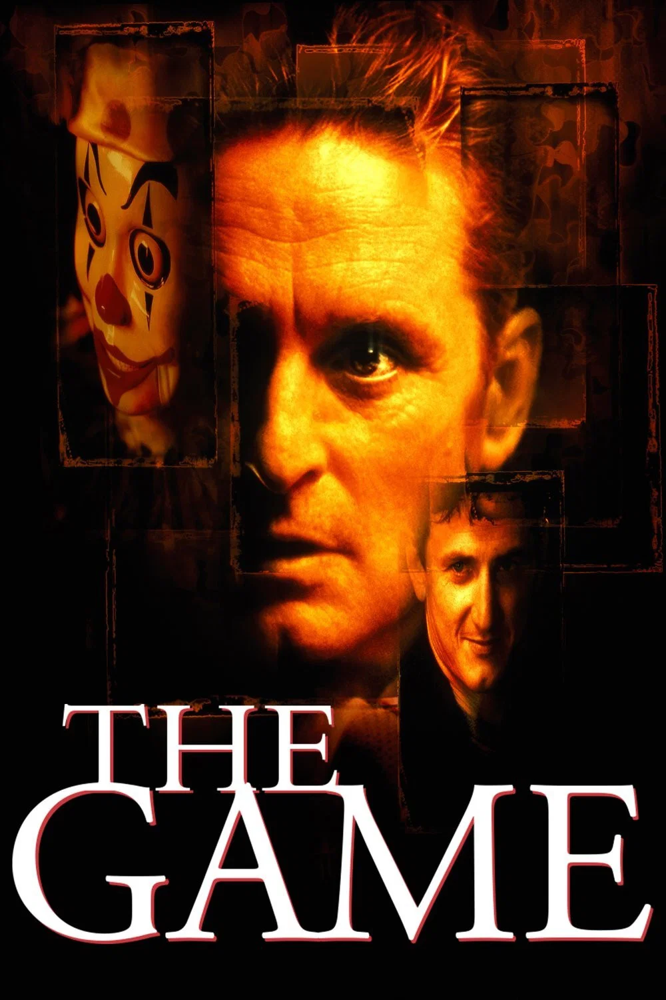
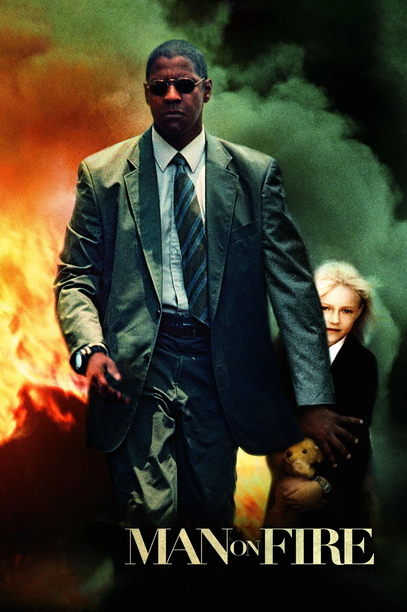
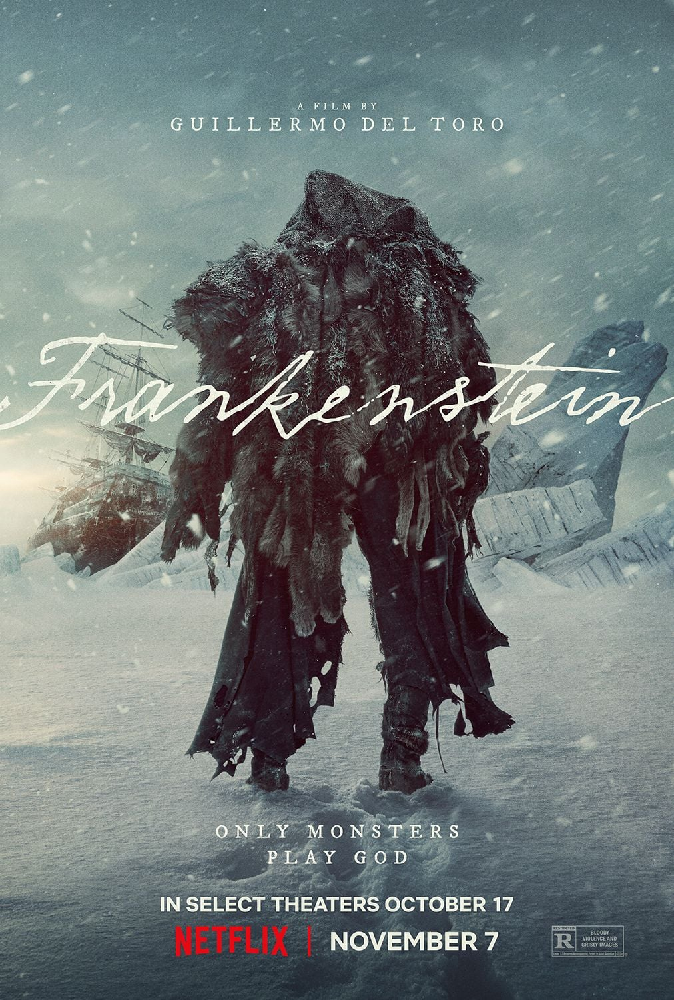
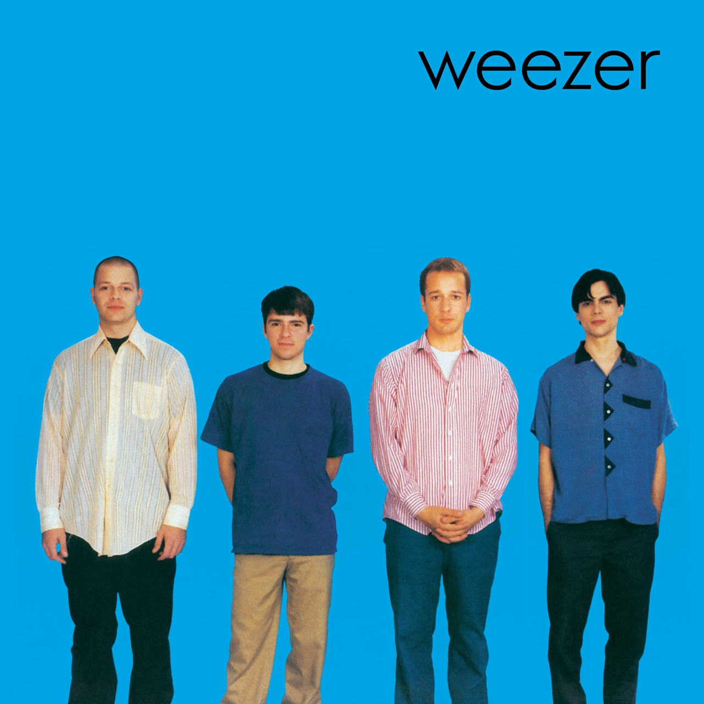
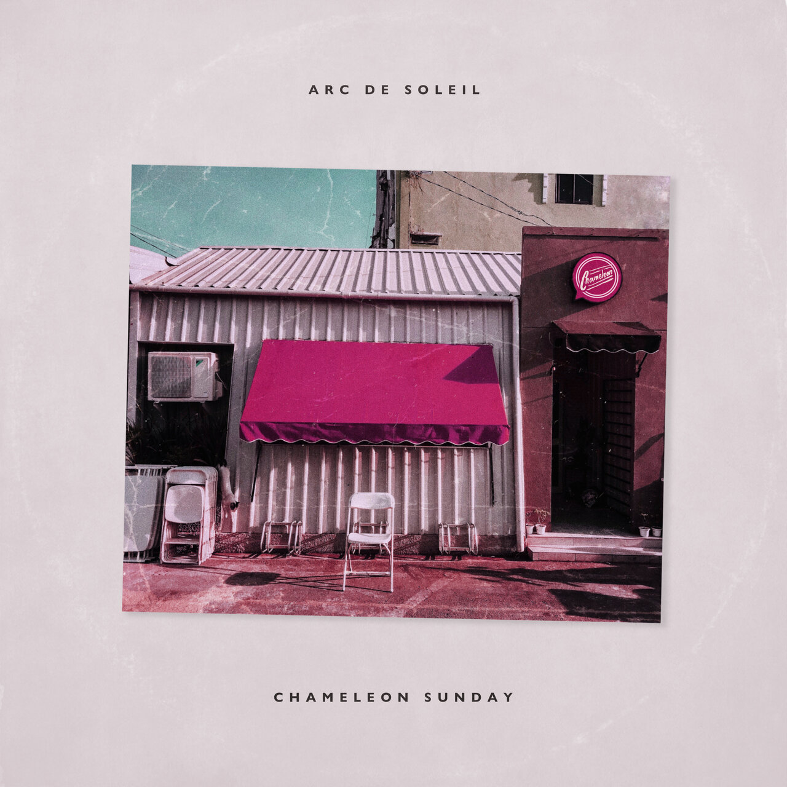
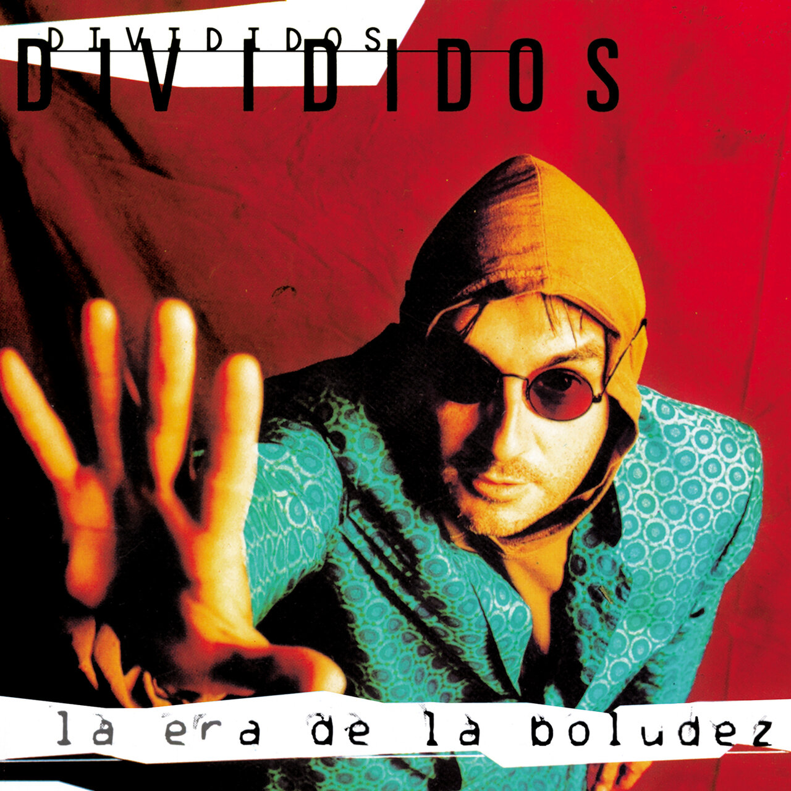
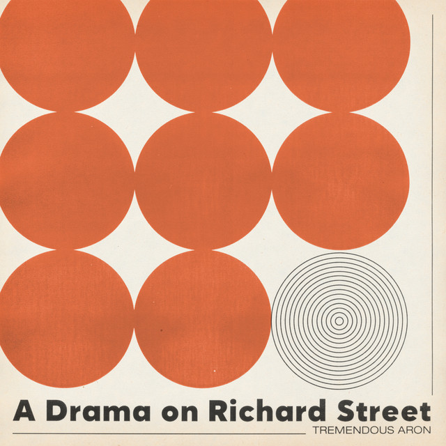

Responsive & Testing
Lucas Luccaroni
Full Stack & AI-Driven Developer
Desarrollador Full Stack y AI-Driven Developer enfocado en arquitecturas web escalables, desarrollo agéntico e inteligencia artificial aplicada. En este TP1 asumí la responsabilidad de la optimización responsive integral, consistencia de maquetación y testing de interfaz del equipo.
Skills
Habilidades
- 1. Frontend & Maquetación Adaptativa: HTML5 semántico, CSS3 modular (Flexbox y Grid), JavaScript moderno y TypeScript, con especialización en diseño responsive y accesibilidad web.
- 2. Backend & Arquitectura de Servicios: Desarrollo con Node.js, Express, C# y .NET, estructuración bajo patrón MVC y diseño de APIs REST robustas y seguras.
- 3. Bases de Datos & Persistencia: Modelado, optimización y administración de bases de datos relacionales y NoSQL utilizando MySQL, Supabase, Firebase y MongoDB.
- 4. IA Aplicada & Desarrollo Agéntico: Integración de modelos LLM (Ollama, Groq, OpenRouter), construcción de pipelines RAG con bases vectoriales y flujos de trabajo colaborativos Humano-IA.
Cinematografía
Películas favoritas





Colección Sonora
Discos favoritos



